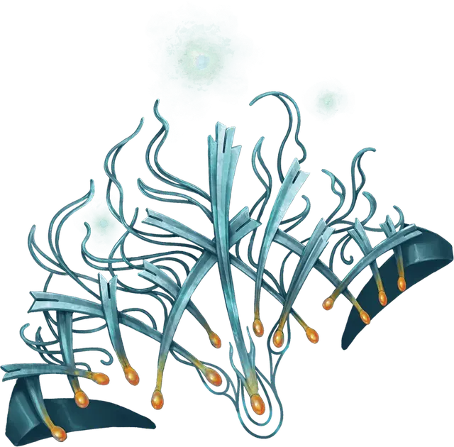

Тиара кружащихся комет
Crown of Whirling Comets
Чудесный предмет, очень редкий (требуется настройка)

Рекомендованная стоимость 5 001-50 000 зм
Эта нежная серебряная тиара украшена звездной иконографией. Пока вы носите корону, драгоценные камни на кончиках тиары отделяются и вращаются вокруг вашей головы.
Тиара имеет 6 зарядов для следующих свойств, которые можно использовать, пока вы носите эту тиару:
- Звездный полет. Бонусным действием вы можете потратить 1 заряд, чтобы получить силу полета на 10 минут. На время действия вы получаете скорость полета, равную скорости ходьбы, и можете парить. Во время полета вы слабо светитесь звездным светом.
- Звездный удар. Действием вы можете потратить любое количество зарядов, чтобы запустить снаряды из холодного звездного света. Вы запускаете количество снарядов, равное количеству потраченных зарядов, и можете направить их на одно или несколько существ, при условии, что все существа находятся в пределах 120 футов от вас и вы можете их видеть. Снаряды автоматически попадают по цели, и каждый снаряд наносит 2к4 урона холодом.
- Кружащийся град. Вы можете действием потратить 3 заряда, и наложить заклинание град [ice storm] (Сл спасброска 16).
Корона восстанавливают 1к6 израсходованных зарядов ежедневно на рассвете.